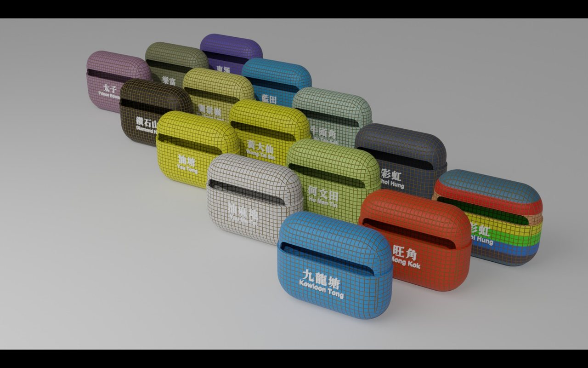
MTR earphone shells
MTR-themed earphone shells, designed, printed and spray-painted: 100 made, about 40 sold at HKD 139.
Software developer at Votanic, Hong Kong. I connect ESP32 and Micro:bit controllers to XR scenes over BLE and serial, then design and 3D-print their housings in Fusion 360.
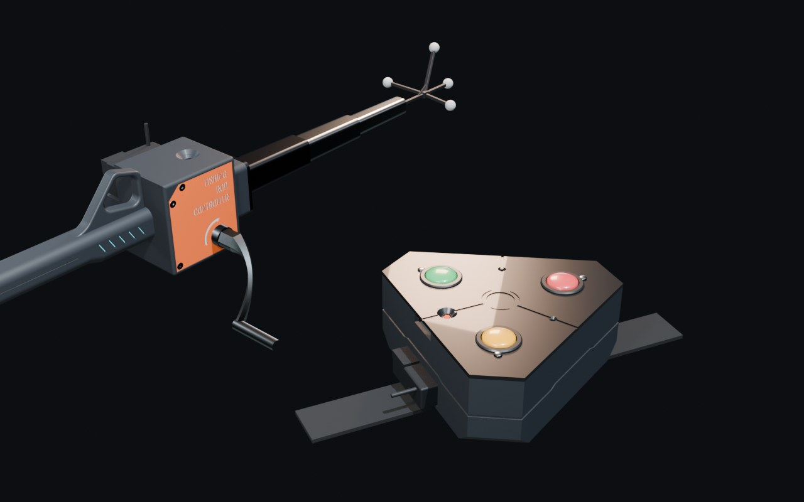
3D EXPLODED VIEWThe demo product for XRCC's BLE microcontroller feature: swing to cast, feel the bite, crank to reel in. I built the hardware, the Fusion 360 housing and the BLE backend in about a month.
The software behind the hardware demos: one interface for every controller, several BLE devices at once, and BLE 2, a cross-platform rewrite.
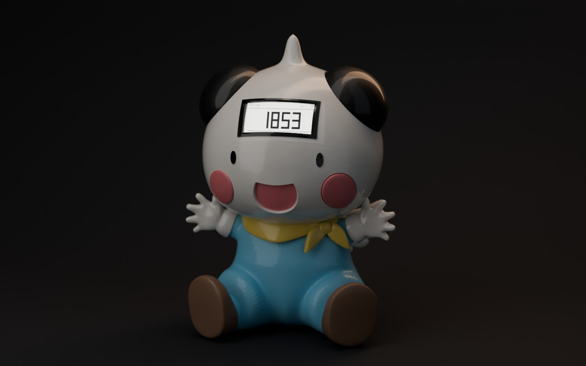
BLENDER CASEAn e-paper desk clock on a perfboard, in a Blender-modelled case shaped like Potclean from Hunter × Hunter. Six modes, two knobs for ears, and a test of how far AI can speed up hardware.
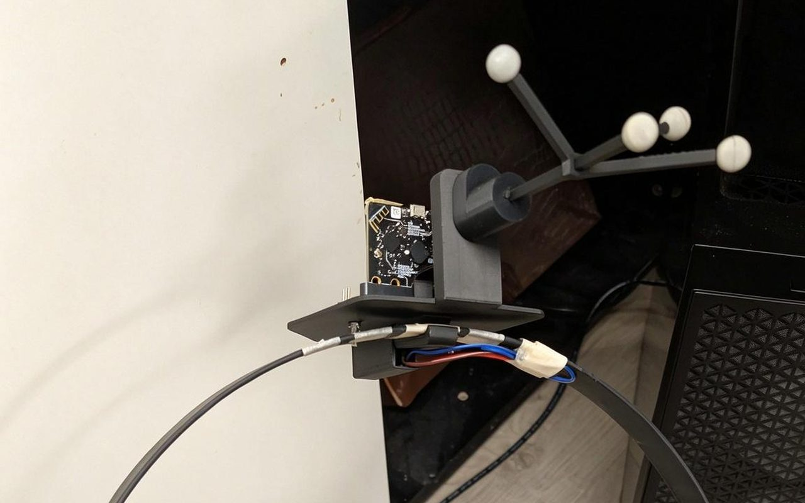
3D EXPLODED VIEWSqueeze a real yoga ring to play: a flex sensor and a Micro:bit in a tailor-made 3D-printed holder, demoing XRCC's Micro:bit connection.
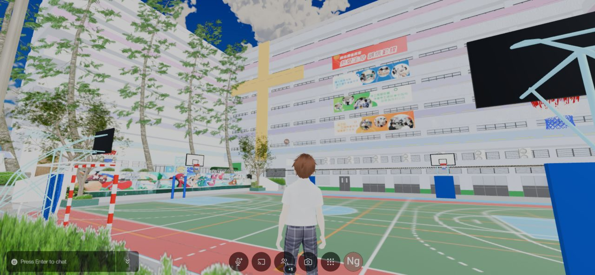
360° VIEWS + COURSETwo school campuses modelled single-handed in Blender from my own 360° captures, one of them in a month, then turned into a 10-lesson Blender course. Look around in 360°.
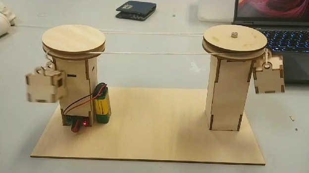
VIDEOWorkshop kit for Ngong Ping 360: laser-cut plywood towers, 3D-printed cabins and a motor-driven thread loop. I took it from design to a batch order: revised it with the client over a month to fit the budget, sourced the laser-cut parts in bulk, and quality-checked every motor before delivery.
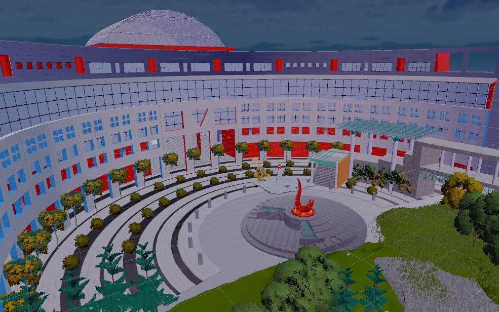
TRAILERGrade A final-year project, team of 4, 8 months: a Unity game set in walkable models of the HKUST Piazza, Atrium and Science corridors. I built the map, plus the enemies' meshes, shading, rigging and animation.
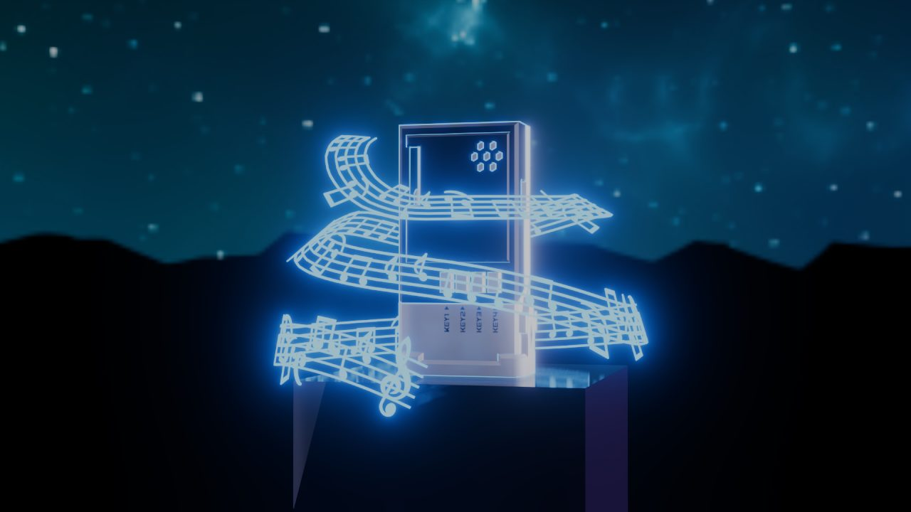
FUSION 360 MODELA tailor-made PCB case with sci-fi details. Opens the model in the Fusion 360 web viewer.
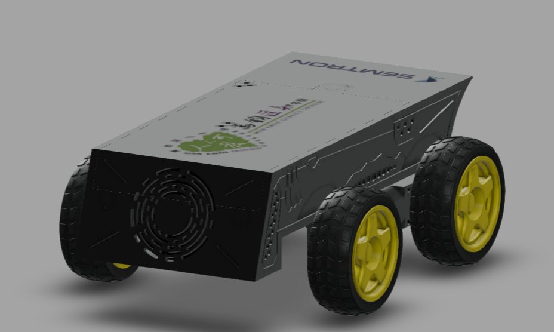
FUSION 360 MODELA tailor-made body for an AI car, with sci-fi panel lines and vents. Opens the model in the Fusion 360 web viewer.
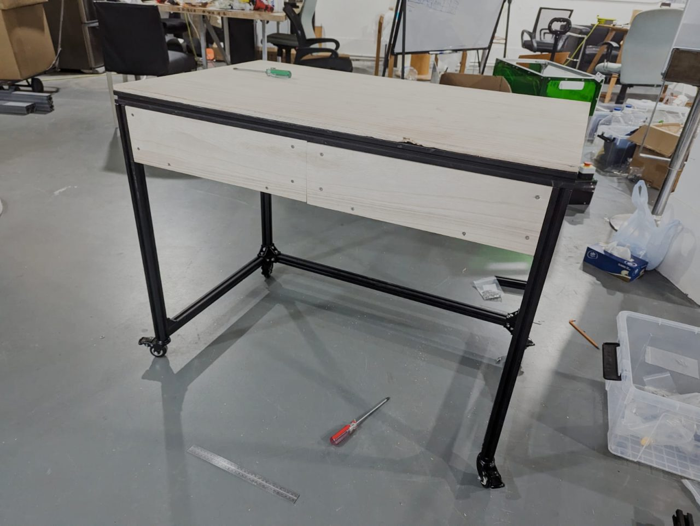
FUSION 360 MODELA mobile, detachable and combinable table, designed in Fusion 360 and built from aluminium extrusion and wood.

MTR-themed earphone shells, designed, printed and spray-painted: 100 made, about 40 sold at HKD 139.
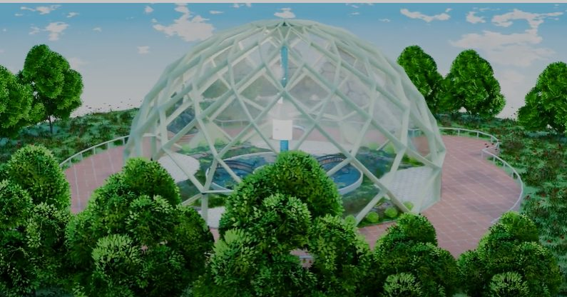
VIDEOA Blender visualisation of an environmental garden cemetery, giving pets a calm, open space after death.
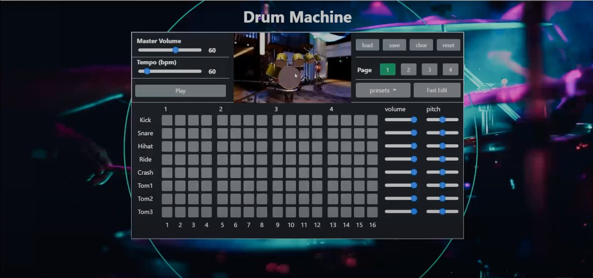
VIDEOMake beats by clicking the drum pad or using keyboard shortcuts; the 3D drum animates with each pitch.
 VIDEO EDITING
VIDEO EDITING
Course projects in editing, remixing and AI-assisted music video.
Unity and C# on XRCC, the company's XR creation platform.
Virtual campuses, a large-format DLP print service, and tailor-made 3D and XR workshops for schools.
Blender visualisation for clients and tailor-made prints with sanding and spray painting.
Engineering workshops, power-tool safety videos, and AutoCAD layouts for laser-cut decorations. Taught myself Blender, then assisted a 4-day Blender workshop.
Dean of Engineering Scholarship (HKD 20,000). Final-year project graded A.
A 10-lesson Blender course built on a real school's rooms, a character motion-capture course with its own tutor training, and the power-tool safety videos I shot at HKUST.